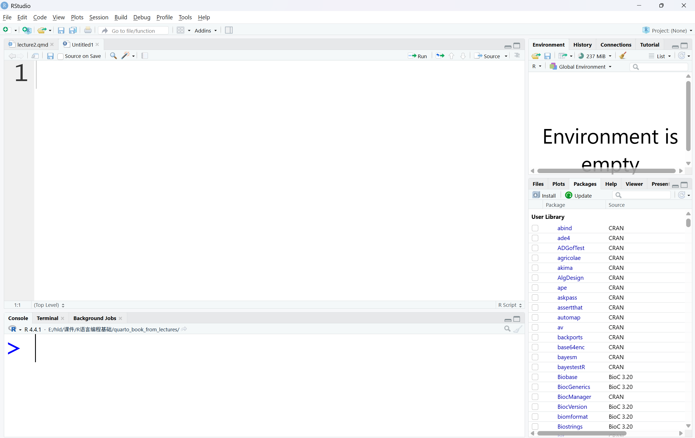
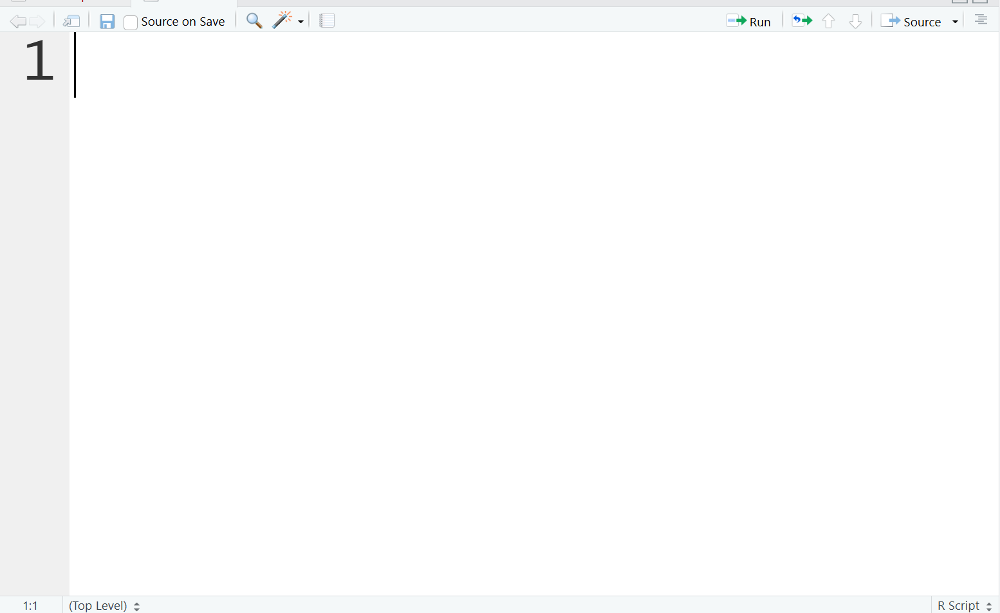
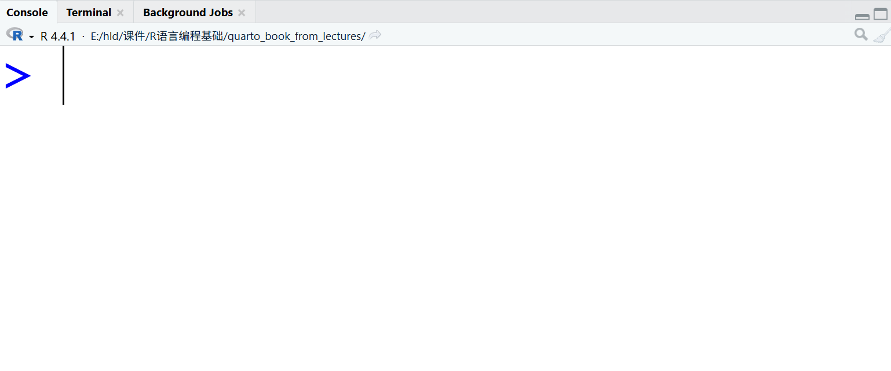
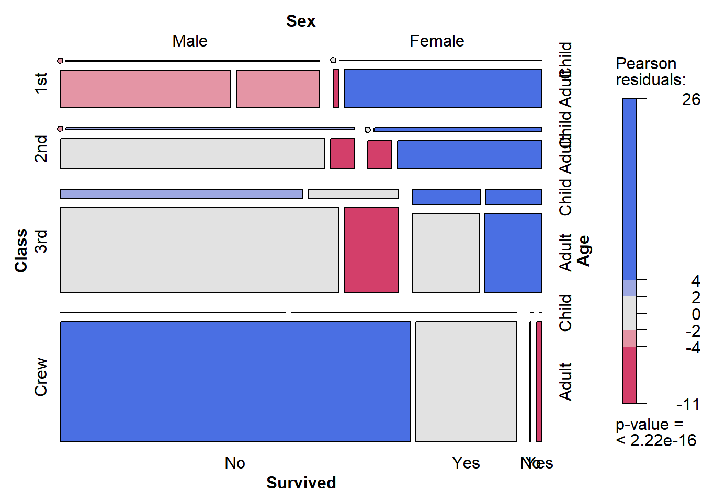

Code
x <- 10
x + 5[1] 15完成本讲后，你将能够：
RStudio（现称 Posit Desktop）是 R 的集成开发环境（IDE）。
R 负责计算，RStudio 负责提供操作界面。
通过 RStudio，你可以：
RStudio 默认由四个窗格组成（图3.1）。

脚本用于编写：
.R 脚本.qmd 或 .Rmd 文档推荐做法：
Ctrl + Enter 运行当前行Ctrl + S 保存文件
脚本区的功能介绍
Show in New Window 用于将当前文档或预览内容在独立窗口中打开。
常见用途：
Save 用于保存当前脚本文件。
快捷键：
良好习惯：
未保存的脚本在关闭 RStudio 时可能丢失修改内容。
Source on Save 表示“保存时自动运行脚本”。
开启后：
适合场景：
注意：
Find 用于在当前文件中查找关键词。
快捷键：
常见用途：
建议：
Code Tools 提供代码辅助与编辑功能。
常见功能包括：
示例：
输入：
mean() Compile Report 用于将 R Markdown 或 Quarto 文档编译为报告。
在 .qmd 文件中，它通常对应工具栏上的 Render 按钮。
常见输出格式包括：
Compile Report 的作用
.html、.pdf）当你点击 Render 时，Quarto 会：
因此：
Run 用于执行当前行或选中代码。
快捷键：
适用场景
示例：
x <- 10
x + 5[1] 15Re-run 表示重新运行最近执行的代码。
它会重复刚刚执行的命令。
适用场景
注意事项
Source 用于执行整个脚本文件。
点击 Source 后，RStudio 会：
等价命令为：
source("your_script.R")
用于：
示例：
1 + 1[1] 2sqrt(25)[1] 5Console 的运行机制
Console 本质上是一个 R 会话（R session） 的交互界面。
其运行机制可以理解为以下过程：
R 采用的是 解释执行机制，而不是一次性编译运行。因此：
例如：
x <- 10
x + 5[1] 15如果没有先运行 x <- 10，第二行将会报错。
会话（Session）的概念
Console 中的所有对象都存在于当前的 R 会话中。
其主要特点包括：
重启 R 会话的方法：
重启后，当前环境会被完全清空。
Console 与脚本的关系
Console 是代码的 执行窗口，脚本是代码的 存储窗口。
推荐的基本原则是：
原因在于：
Console 报错信息的含义
Console 中常见的信息类型主要有三类：
示例错误：
y + 1如果对象 y 不存在，Console 会返回错误提示。
学会阅读并理解错误信息，是学习 R 语言的关键能力之一。
提示符（Prompt）的含义
Console 左侧常见的提示符包括：
> 表示可以输入新的命令+ 表示上一条命令尚未完成例如：
> if (TRUE) {
+当出现 + 时，说明代码结构尚未闭合，需要补充相应的内容（如 }）。
Console 不仅是代码执行窗口，更是理解 R 语言逻辑的核心场所。
它体现了：
通过 Console，可以直观理解：
因此，Console 是学习 R 语言的起点，也是调试程序与理解分析过程的关键窗口。
Environment（环境）面板用于显示当前 R 会话中的对象。
它反映的是当前内存中存在的变量、数据框、模型对象等内容。
例如：
x <- 1:5
df <- data.frame(a = 1:3, b = c("A","B","C"))运行后，Environment 中会显示：
删除某个对象：
rm(x)清空全部对象：
rm(list = ls())History（历史）面板用于记录在 Console 中执行过的命令。
将历史命令写入脚本：
保存历史记录：
savehistory("my_history.Rhistory")读取历史记录：
loadhistory("my_history.Rhistory")Connections（连接）面板用于管理外部数据源连接。
常见连接类型包括：
当建立数据库连接时，例如：
# 示例（需安装 DBI 包）
library(DBI)
con <- dbConnect(...)连接成功后，会在 Connections 面板中显示。
断开连接示例：
dbDisconnect(con)| 面板 | 功能核心 | 主要用途 |
|---|---|---|
| Environment | 当前会话对象管理 | 查看与管理变量 |
| History | 命令历史记录 | 回溯与复用命令 |
| Connections | 外部数据源连接管理 | 数据库与远程连接 |
Files 面板用于浏览和管理当前工作目录中的文件。
它的核心作用是：
进入子文件夹：
返回上级目录：
设置当前目录为工作目录：
查看当前工作目录：
getwd()Files 面板本质上是对当前项目目录的可视化管理工具。
Plots 面板用于显示图形输出结果。
当运行绘图代码时，例如：
plot(1:10)
生成的图形会自动显示在 Plots 面板中。
建议：
Packages 面板用于管理已安装的 R 包。
主要功能包括：
例如加载包：
library(ggplot2)在 Packages 面板中勾选 ggplot2，效果与上面代码相同。
建议：
Help 面板用于查看函数帮助文档。
例如：
?mean或：
help(mean)Help 面板会显示：
学习建议：
Viewer 面板用于显示网页内容和交互式结果。
常见用途包括：
例如运行 Shiny 应用时，界面会显示在 Viewer 中。
Viewer 是 RStudio 内部的“浏览器窗口”。
Presentation 面板用于展示基于 R Markdown 或 Quarto 制作的演示文稿。
功能包括：
适用于：
现代教学中更推荐使用 Quarto 生成 revealjs 幻灯片。
| 面板 | 核心功能 | 主要用途 |
|---|---|---|
| Files | 文件管理 | 浏览与管理项目文件 |
| Plots | 图形管理 | 查看与导出图像 |
| Packages | 包管理 | 安装与加载扩展包 |
| Help | 文档查询 | 查阅函数说明 |
| Viewer | 网页预览 | 显示 HTML 与交互内容 |
| Presentation | 演示播放 | 播放幻灯片 |
R 之所以功能强大，是因为其拥有庞大的扩展包生态系统。
所谓“包（Package）”，是指一组已经封装好的函数、数据和文档的集合，用于实现特定功能。
可以理解为：
例如：
ggplot2 用于绘图dplyr 用于数据处理sf 用于空间数据分析shiny 用于交互式应用开发CRAN（Comprehensive R Archive Network）是 R 官方包仓库：
国内镜像可参考：
https://mirrors.tuna.tsinghua.edu.cn/CRAN/
为了提高下载速度，建议选择合适的镜像。
方法一：首次安装时选择镜像
chooseCRANmirror()方法二：设置默认镜像
options(repos = c(CRAN = "https://cloud.r-project.org"))或使用国内镜像：
options(repos = c(CRAN = "https://mirrors.tuna.tsinghua.edu.cn/CRAN/")) install.packages("MASS")一次安装多个包：
install.packages(c("ggplot2","dplyr","readxl"))适用于：
install.packages("包文件路径/package.tar.gz", repos = NULL, type = "source")Windows 下也可安装 .zip 文件。
有些包尚未发布到 CRAN，可从 GitHub 安装。
首先安装 remotes 包：
install.packages("remotes")然后安装 GitHub 包：
remotes::install_github("用户名/仓库名")例如：
remotes::install_github("tidyverse/ggplot2")注意：
删除已安装的包：
remove.packages("MASS")更新所有包：
update.packages()查看当前包安装路径：
.libPaths()查看已安装包：
installed.packages()查看某个包的帮助文档：
help(package = "MASS")加载包：
library(ggplot2)或：
require(ggplot2)区别：
library() 加载失败会报错require() 加载失败返回 FALSE也可以在 RStudio 右下角 Packages 面板中勾选加载。
library(vcd)
mosaic(Titanic, shade = TRUE, legend = TRUE)
思考：
library()，保证代码可复现